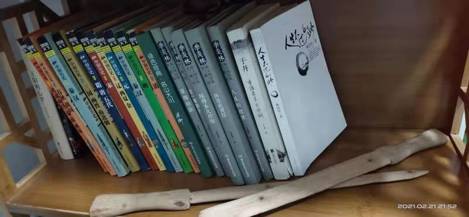
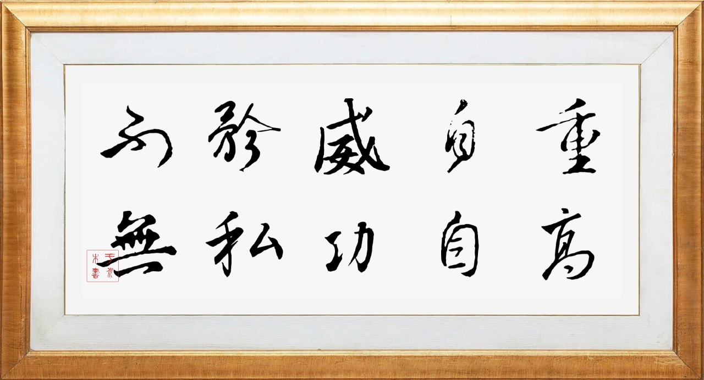

记爷爷的二三事————“正”字篇¶
 逝去的人总是如青烟袅袅，随风飘散的无影无踪，留下的且不过一些零散的回忆。守望这些回忆，细细品读别有一番滋味上心头。积了些沉的木书架上，零散的摆着几本书与一把精致的小木剑，这样回忆涌上心来。
故乡旧宅里总是有一只沧桑的手牵着我走过田间陇头，走过酸苦辛甘，走过似水流年，那双手属于我的爷爷。有些昏黄的橘色灯光下，那双被岁月侵蚀的手抱着老旧的书一次句的念给我听。我天真的眼神透过爷爷戴老花镜怎么也看不到那爱的尽头。每个乡村的夜晚，爷爷总是用故事和那深沉的爱伴我入梦。那手虽然刻满了岁月的铭文却是异常的精巧，平平无奇的树木枝，经他手几个日变成一柄精致的木剑，乍看也有几分神似。总是引得邻屋的小孩子们阵阵羡慕。但是对于这些亲手制作的木制小玩具我说从未夸过他，更未给他过一句赞扬，不过耍弄几下便弃之于地，如同散落了一地的破碎心愿，在时间的蚕食下不知去向。
爷爷很喜欢独自一人陷进清瘦的字体在有些残破的书本与泛黄的旧照引起的回忆。他有时一言不发，也有时自言自语，但是残言片段足以拼出他的半生。爷爷是贫穷的孩子，小时候随他父亲游走四方，以求生计。为了弟弟妹妹的学费与生活开支，他曾经一夜从济宁到曲阜，走八十里地路程。我曾经问他当时是怎么跑下来的，日记本上记到他只是想着弟弟妹妹还未果腹。
当然我并不知道这本日记本上记载的是一个故事或是一段真正发生的奇迹。但是接下事是我从他造纸厂的同事王爷爷处听来。爷爷年轻时在造纸厂负责采购，是份油水闲差，但是爷爷第1天上班却让所有人惊诧。因为爷爷采购回来把剩余的钱上交时，路过的厂工说：“一分钱你自己拿着吧，咱厂不差这钱”。接着便是爷爷常给我说的那句话，那你就值一分钱吗?一分钱也不是我的，得上交。此时财务的人便也睁大了眼睛。然后爷爷便多了“一分张“的外号。 这样的场面重复了两年，之后他脱了工作服，该改穿上一身戎装，背起了钢枪与祖国的期望，去守护家里日久悠长祖国河山无恙。
爷爷当兵时犯过“错误”，打了人，但他却以此为傲。原来。他打的那人是街头恶子。因斗酒常输，卖尽家产.时常找父母要钱。二老所有的积蓄都被那恶子挥霍尽了。他便时长趁着酒劲，虐打父母。当爷爷路过见趴在地上的老妇。本想扶起那老妇，街头恶子便谩骂者让爷爷闲事少管。还踢了那老妇一脚说道，拿钱来我要喝酒。尚血气方刚的爷爷，怎能见这样的事情？爷爷一脚正中那人小腹，那人一边高声嚷着解放军打人了，一边举拳打来。他哪是军人对手。一番下来又被爷爷教训了几下。邻人街坊都叫好“打这个恶棍“。后来那人耍了一些手段，让爷爷受了罚。至今我问爷爷，爷爷始终骄傲。爷爷还说受罚无所谓，这样人该打。他本子上写的在部队期间上市多次，让他回济宁买玉堂的酱菜犒劳大家。但他却一次也没回回过家看望家人。我姑姥姥专门找爷爷，让他用剩下的钱买糖。爷爷说这钱是公家的，不能乱用。那时知道这个事的我年方7岁，直到现在我才明白，爷爷的一生就是一个字，他时常给我说的那个字，正。  时光的藤蔓上，寒风吹落最后一片树叶，岁月已暮。一路上走过的冷暖，在记忆的长河中渐次沉淀。烁烁生辉的过往，在寂寂流年中归于平淡。划过岁月，掠过流年